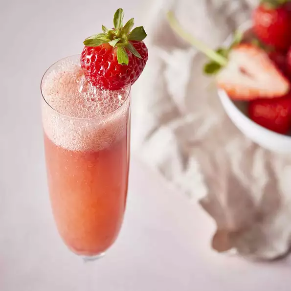

Strawberry Bellini

Strawberry Bellini
A nice drink for Mother's Day, a brunch, or a shower.
Ingredients
3
cups strawberry, hulled and sliced
1
/4
cups confectioner's sugar
1
tablespoon brandy
Directions
Blend 3 cups strawberries, confectioners' sugar, and brandy together in a blender until smooth. Chill in refrigerator for 10 minutes.
Divide the strawberry mixture among 3 champagne flutes; top each with about 1/2 cup sparkling wine; stir. Garnish each glass with 1 strawberry.